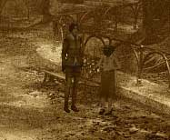

|
夢の世界へたどり着いたら、まず目の前にある洞窟の奥へと移動しよう。洞窟の奥には、かつてあなたが手にした「マンモスの人形」が落ちているはずだ。 この人形を、手にしたら洞窟を出て、町へ行こう。一本道なので、迷うことはないはずだ。

町を探索する前に、会っておかなければならない人がいる。それは、アンナだ。 アンナに話しかけ、「ハンスはどこにいるか」、「ハンスはどのような状況か」、そして「工場の始業時間」を調べよう。 この3つ(もしかしたら、一部は正確な答えが分からないかもしれないが)を聞いたら、礼を言ってから町へ向かおう。 工場へ続く入り口は非常にわかりにくい。 町を移動しながら、壁を調べてみよう。どこかに扉があるはずだ。 もし、工場へ続く扉が閉まっていたら、アンナに会って工場が開く時間を調べてみよう。
| 次へ >> |
|